Agbára · servicing tug In design
Grab it by the ring.
Move it anywhere.
Almost every satellite bigger than a CubeSat still carries the ring it was launched on. Agbára flies up to it, clamps on, and becomes the satellite’s engine. Then it lets go and flies to the next one. It is a design today; we aim for ground tests in 2027 and a flight demonstration after that.
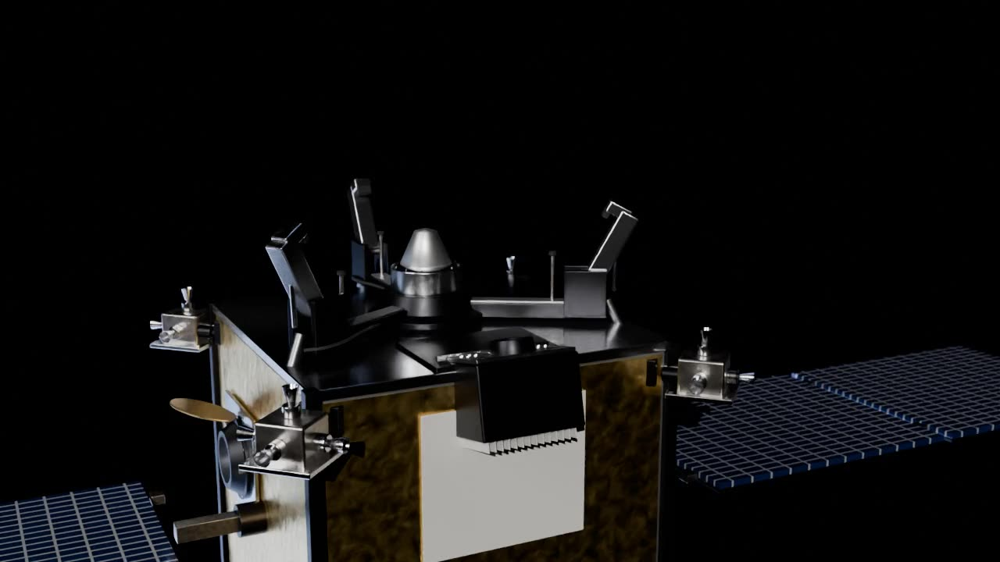
Meet Agbára
How Agbára takes hold
Concept animation
01 · Anya
It sees the ring first
Anya’s two cameras and lidar find the customer’s launch ring from far out and track it all the way in.
02 · Approach
Slow, steady, from below
Jagora flies the last metres at a few centimetres a second and lines the clamp up under the ring. No rush, no bump.
03 · Jide
Three jaws, one ring
Jide closes on the ring every satellite already launched on. The customer needs no special hardware at all.
04 · Igwe
Now it is the engine
Igwe, our solid-iodine electric thruster, lights up and moves both spacecraft as one: higher, lower, or out of the way.
05 · Release
Let go. Next job.
The jaws open and Agbára backs away on small puffs of gas. Every move here is simulated first in Easley.
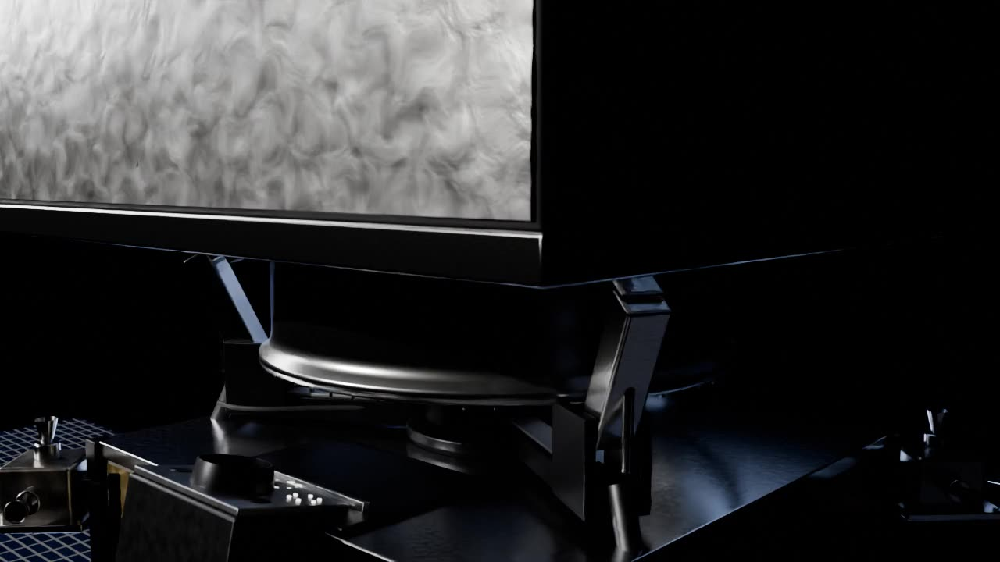
Inside Agbára
One tug. Six systems.
Every one designed in Easley.
Concept render
01
Jide grabs the ring
A three-jaw clamp closes around the launch ring almost every satellite already carries. No changes to the customer’s spacecraft.
02
Wings for days of thrust
Two solar wings power the engine for the long, quiet burns that move a satellite.
03
Solid iodine on board
Igwe’s fuel sits in the tank as a solid. It launches unpressurised and can wait fuelled for years.
04
Igwe, the engine
An electric thruster on a gimbal that steers the push straight through the joined pair.
05
Anya, the eyes
Lidar and cameras find the ring in sunlight or darkness. Two answers must agree before the tug moves closer.
06
Jagora, the brain
Guidance on a fault-tolerant two-processor computer that holds, backs off or commits, and small gas pods for the last metres.
What Agbára is made of
Every system on the tug is its own part, designed and simulated in Easley.
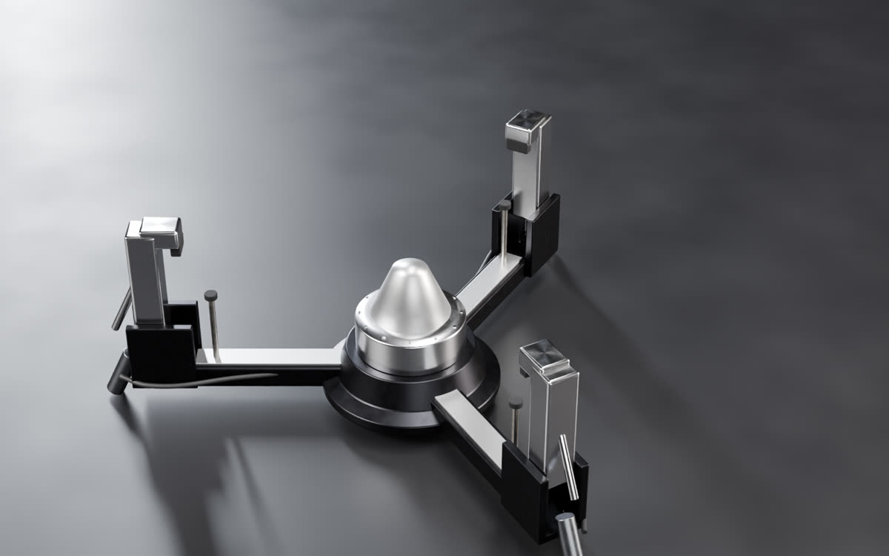
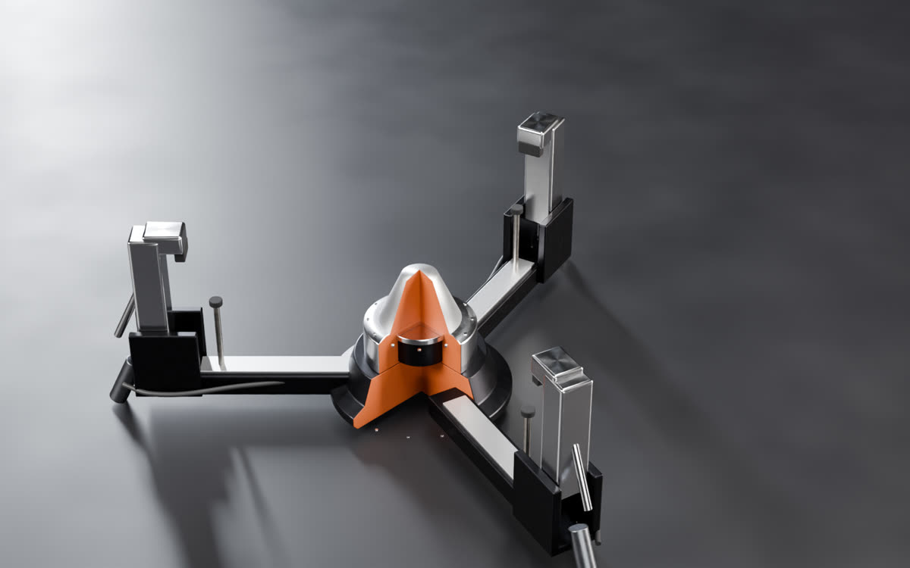
Jide, the clamp
Three jaws close around the launch ring nearly every satellite already carries, so the customer needs no special fittings.
Tolerates ±25 mm of misalignment; a brake locks it shut
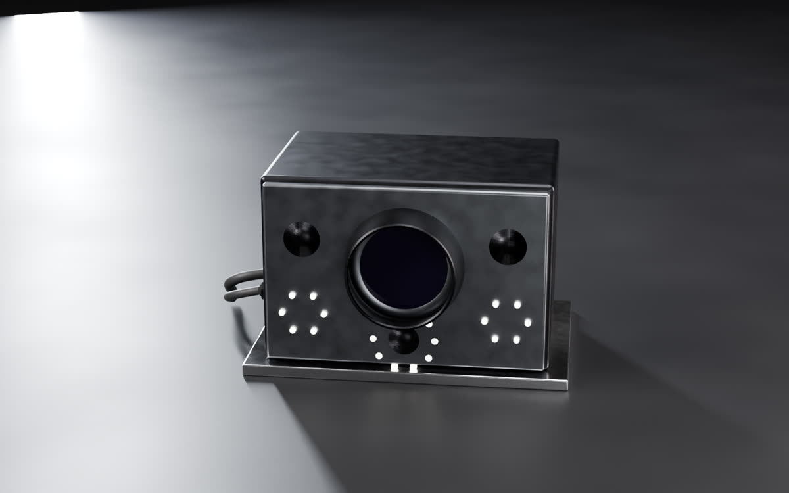
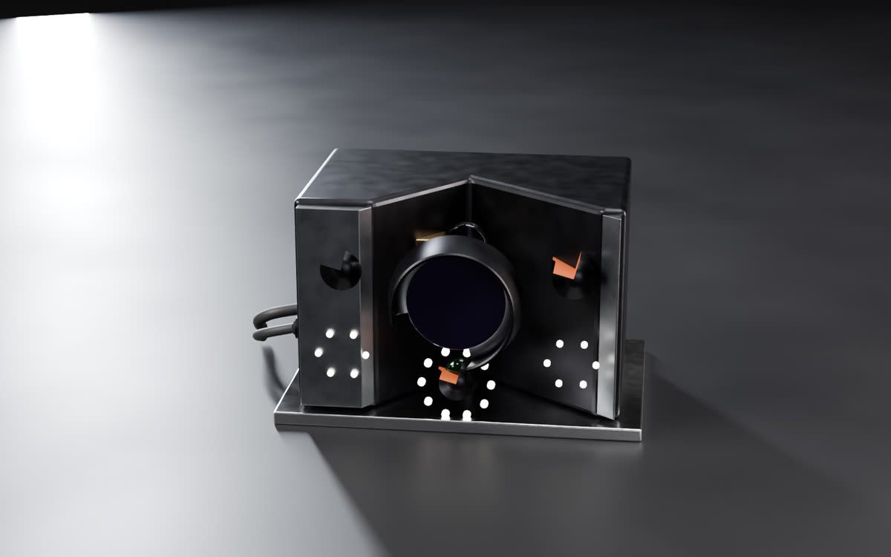
Anya, the eyes
Lidar and cameras find the customer, measure its range and spin, and guide the last metre to capture.
Lidar from about 1.2 km; a close-range camera inside 1.6 m
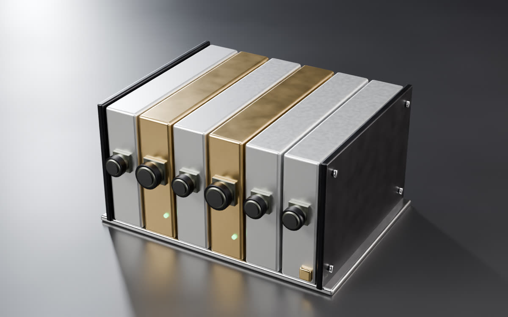
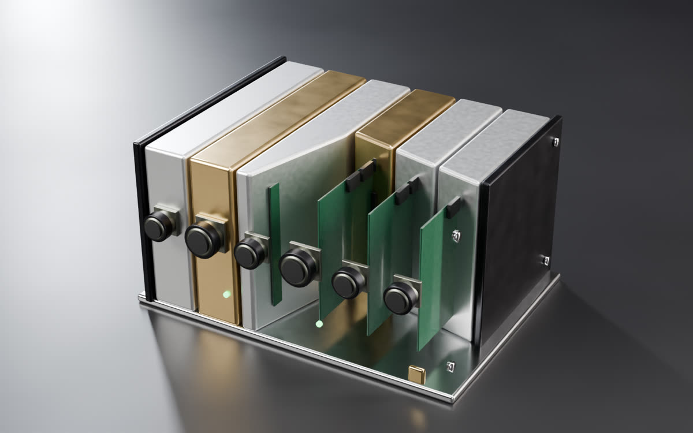
Jagora, the brain
Two processor slices check each other and run navigation, the approach rules and the abort logic. Every command is signed.
Six slices, two of them flight processors
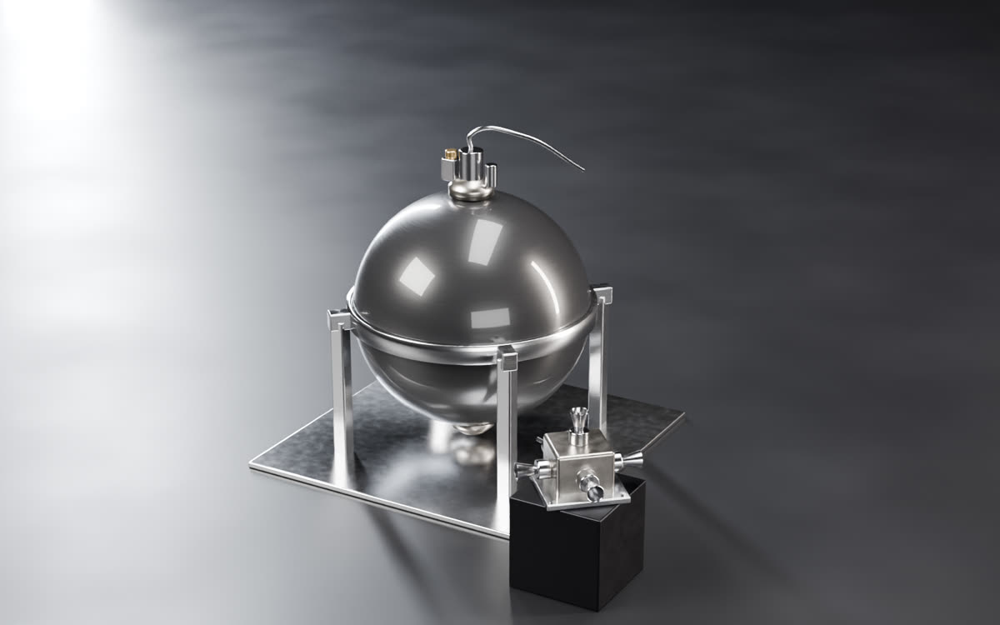
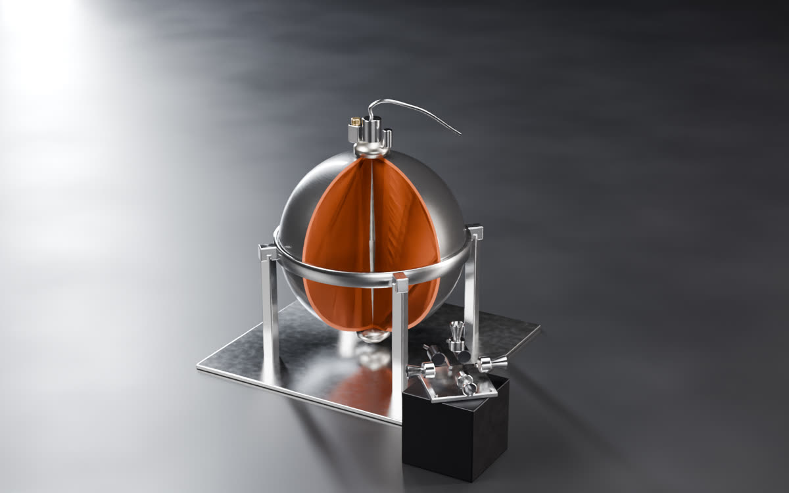
Jagora cold-gas pods
Clean, fine pushes near the customer, where the main engine is switched off so its plume never touches it.
Four pods, four nozzles each; nitrogen for about 5 approaches
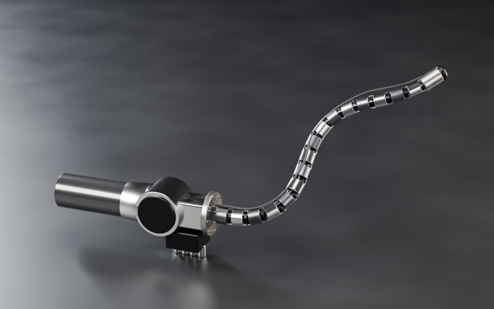
Nyoka, the snake camera
A steerable snake that reaches around and under hardware to inspect hinges, connectors and damage up close.
Comes with Agbára v2, on the tug’s arm
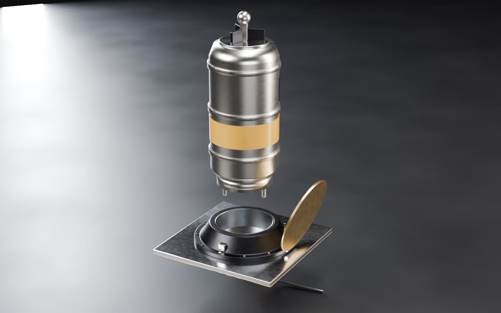
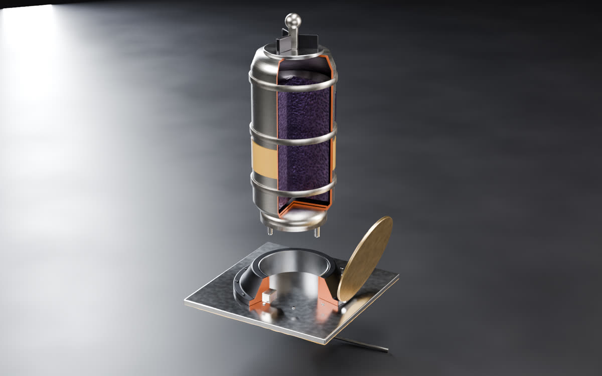
Mafuta, refuelling
A swappable iodine cartridge that plugs into a port on any satellite flying Igwe and tops up its tank.
One-motion blind-mate fuel, power and data
Concept renders of our designs. Figures are design targets from Easley, not yet measured on hardware.
Nyoka and Mafuta at work
Agbára v2 adds an arm. It carries Nyoka to look closely at a satellite, and Mafuta to refuel one.
Concept renders. Agbára v2 is in design.
One tug
for four jobs
Concept render
- 01
Relocation
Raise, lower or move a satellite to a new slot, even one never designed to move.
- 02
Life extension
Stay attached and keep the satellite on station after its own fuel runs out.
- 03
Disposal
Push a dead or retiring satellite down to burn up, inside the five-year rule.
- 04
Inspection
Anya images a satellite on a fly-around, and on v2 Nyoka reaches in on the arm for a close look.
Four jobs, one machine
- Disposal
A dead or retiring satellite is pushed down to burn up, so its operator meets the five-year deorbit rule.
For constellation operators and defence agencies with hundreds of satellites in low orbit.
- Relocation
A satellite is raised, lowered or moved to a new slot, without having been designed to do it.
For operators and for defence customers asking for manoeuvre on demand.
- Life extension
The tug stays attached and does the station keeping after the satellite’s own fuel runs out.
For geostationary operators, with a larger tug, later.
- Inspection
Agbára flies around a satellite and images it with Anya’s lidar and cameras, before any capture or as a service on its own. On v2, Nyoka, the snake camera on the arm, looks closely at ports, hinges and damage.
For operators checking damage or a failed deployment, and for agencies watching what is in orbit.
Buyers are already paying for this work: the US Space Development Agency bought its first satellite disposal service in January 2026. Our edge is the stack: an iodine engine, a launch-ring clamp and rendezvous lidar in one tug, designed in Easley first.
Every system, simulated in Easley first
Agbára is designed as one machine in Easley. Its systems are modelled and simulated there together, before any part is built.
| Job on the tug | How Agbára does it | System |
|---|---|---|
| Main engine | Hall thruster and modular power unit, running on iodine | Igwe |
| Store fuel for years | Solid iodine in a heated tank that feeds in any orientation | Igwe |
| Push through the joined pair | Thruster gimbal, 360° rotation and 12° tilt | Igwe |
| Find and track the customer | Rendezvous lidar, stereo and thermal cameras, a light for eclipse | Anya |
| Decide, hold or back off | Guidance on a fault-tolerant two-processor flight computer | Jagora |
| Fine moves near the customer | Six-axis cold-gas pods | Jagora |
| Grab the customer | Three-jaw clamp around the launch ring | Jide |
| Look before touching | Fly-around imaging with lidar and cameras | Anya |
| Look up close (v2) | Steerable snake camera on the arm | Nyoka |
| Refuel the customer (v2) | Iodine cartridge pushed into a port by the arm | Mafuta |
| Simulate it first | Approach and capture flown hundreds of times in simulation, with sensor failures | Easley |